Identita domu
Dům mezi 823 a 653 (skica KSPPOP 823 | 831 | 653, GIS budova 1122 s popiskem 831). Se sousedním 823 má společnou fasádu; na fotografii je v přízemí společný vchod u svodu, okno a rozšířené výkladní okno, v patře čtyři okna a vpravo asi 2,2 m slepé zdi u 653.
Použité prameny: fotografie cp_831_002 (rektifikovaná 19,67 m pro celý dvojdům), fotografie dvora cp_831_001, skica a karta KSPPOP cp_831_002, GIS půdorys 1122.
Kde je dům na fotografiích
Dům je na snímku v červeném rámečku, sousední domy jsou popsány čísly a každý otvor má ID, podle kterého se počty otvorů kontrolují proti modelu. Kliknutím otevřete větší obrázek.

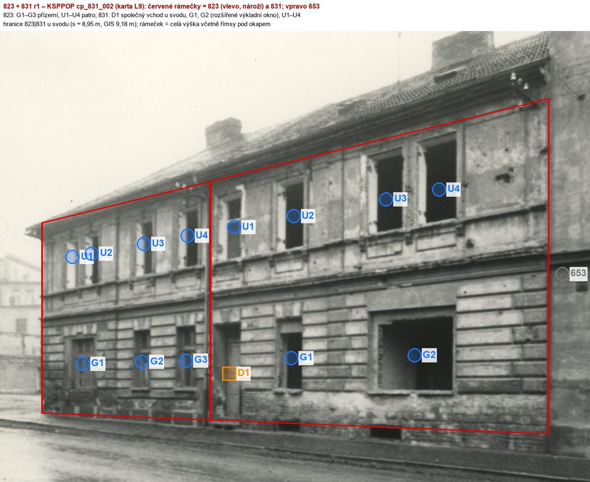
dveře D1 = společný vchod dvojdomu (karta), G2 rozšířené výkladní okno
Přílohy v databázi (8)
Všechny přílohy struktury 831 v databázi Libuše, načtené živě 25. 10. 2026 (jen pro čtení) a otevřené. Kliknutím otevřete větší náhled.

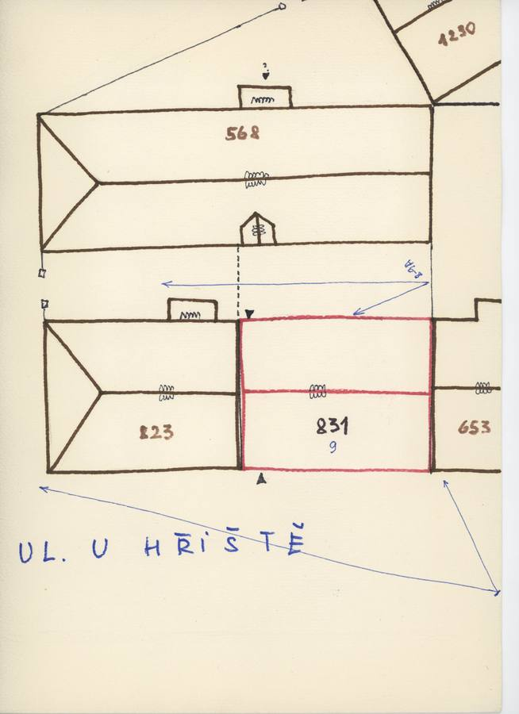
plán / výkres
SHA-256 c6484d6b1df2…

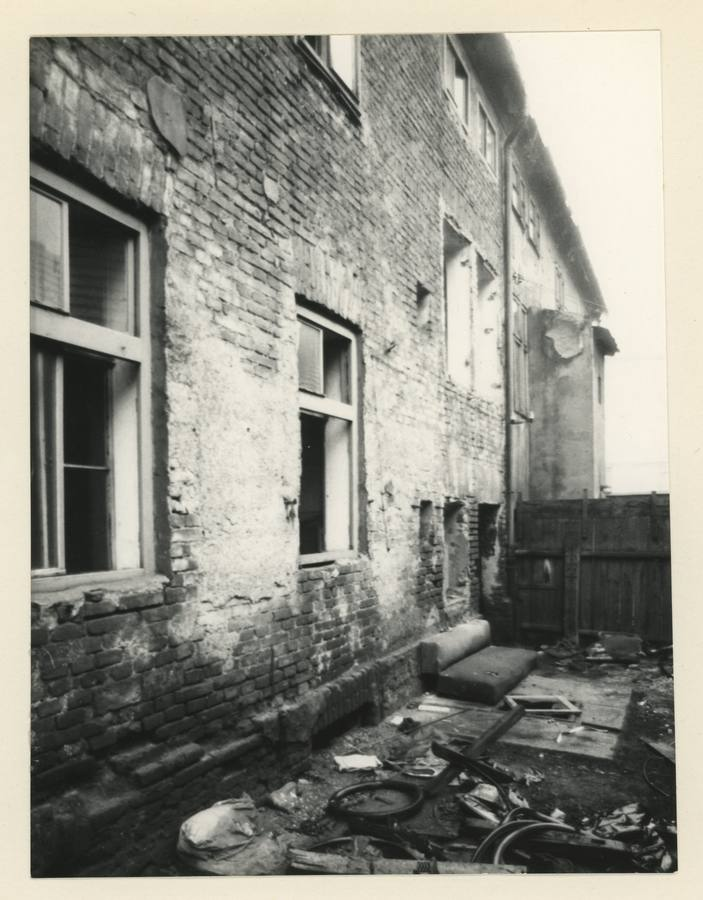
fotografie
SHA-256 50b1afb153c2…

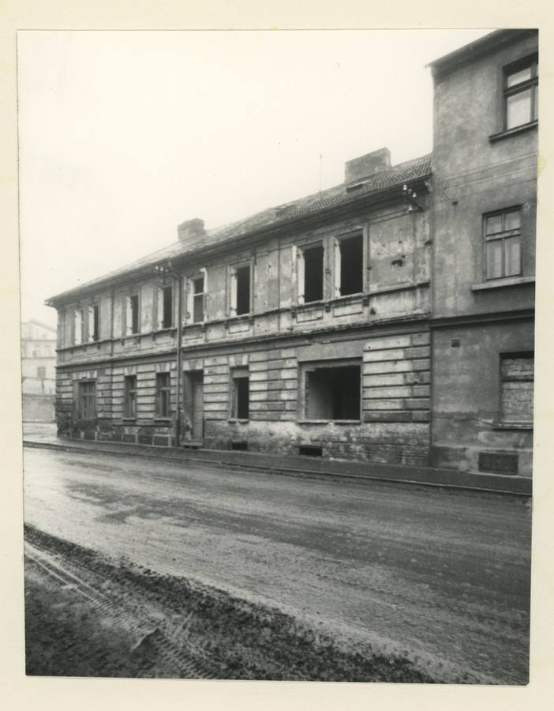
fotografie
SHA-256 f75131fd3eeb…

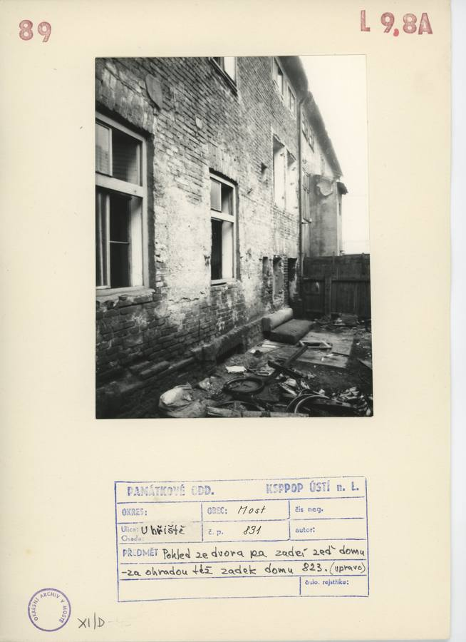
archivní karta
SHA-256 9cfad74c6d0c…

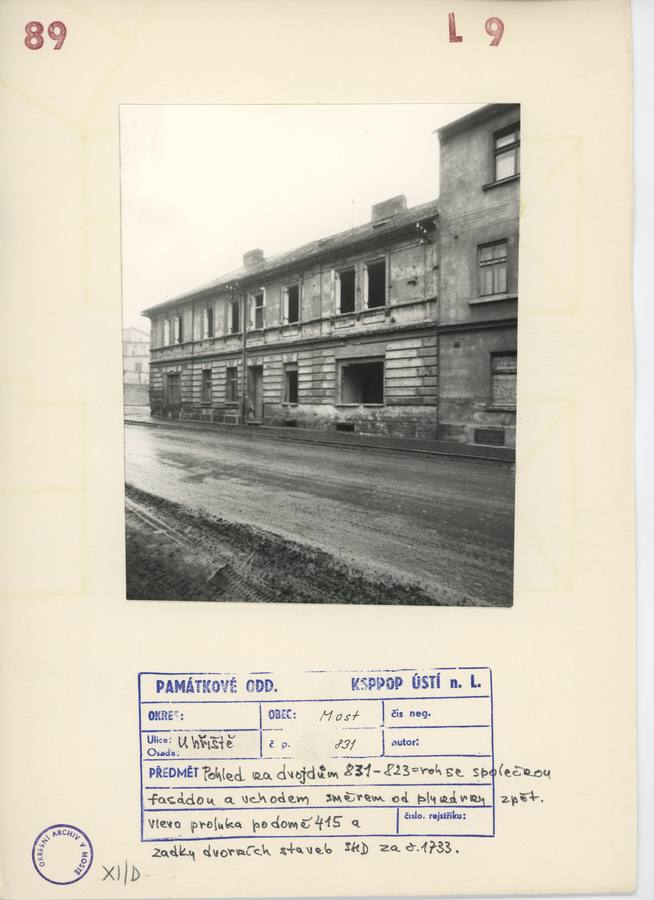
archivní karta
SHA-256 fd4f1a0068bc…

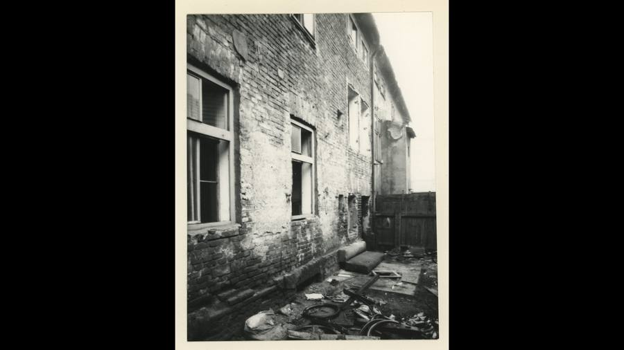
kopie bez tagu (1920 × 1080)
SHA-256 3748a60911b6…

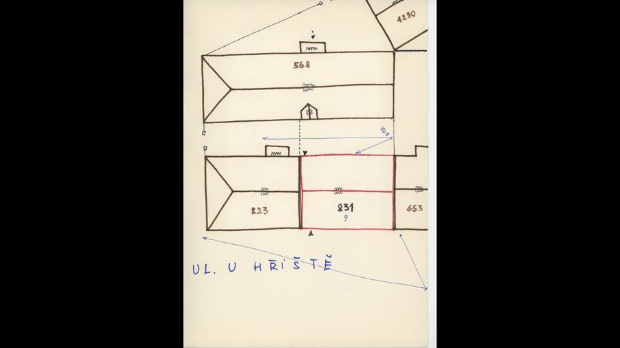
kopie bez tagu (1920 × 1080)
SHA-256 5f3582af06b4…

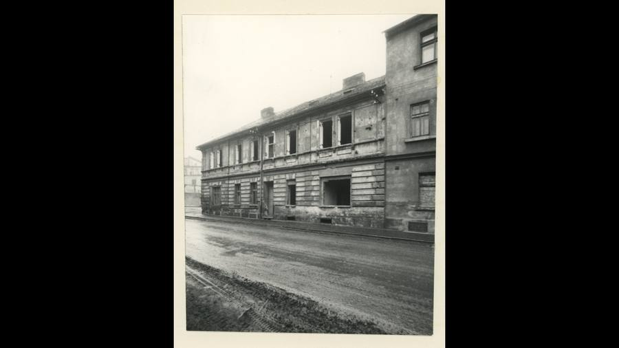
kopie bez tagu (1920 × 1080)
SHA-256 87d8bebe05af…
Geometrie
| Revize geometrie | r1 |
|---|---|
| Úsek ulice | S2 · severozápadní strana VSV ramene |
| Poloha | GIS budova 1122, popisek 831, ulice U hřiště (1938 Seligerova) |
| Šířka průčelí | 10,48 m |
| Výška okapu | 7,45 m (odhad) |
| Podlaží | 2 |
| Střecha podle pramenů | sedlová střecha společná s 823, vpravo štít a požární zeď k vyššímu 653 |
| Otvory / vikýře v modelu | 7 / 0 |
| Polygonů | 173 |
Kontrolní pohledy

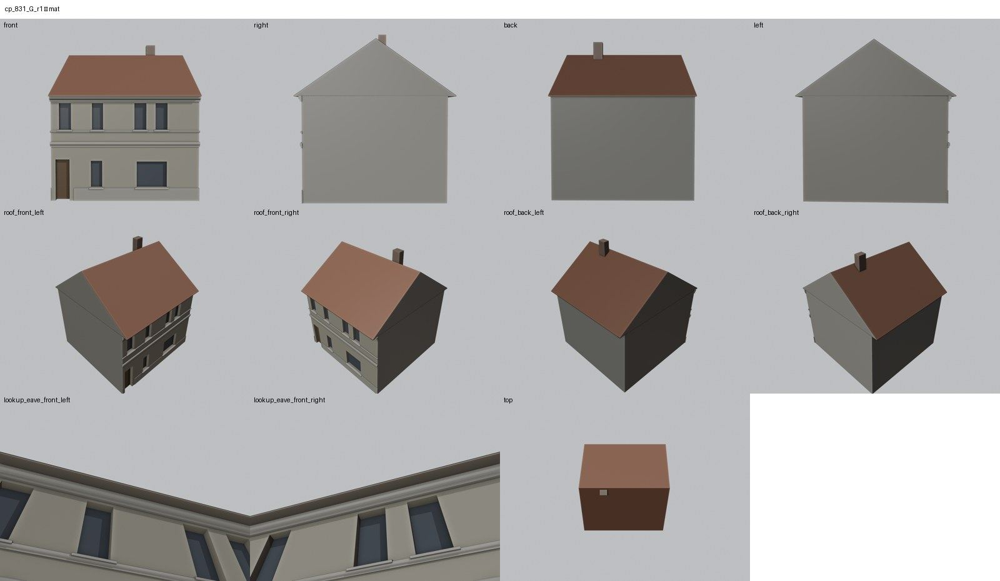

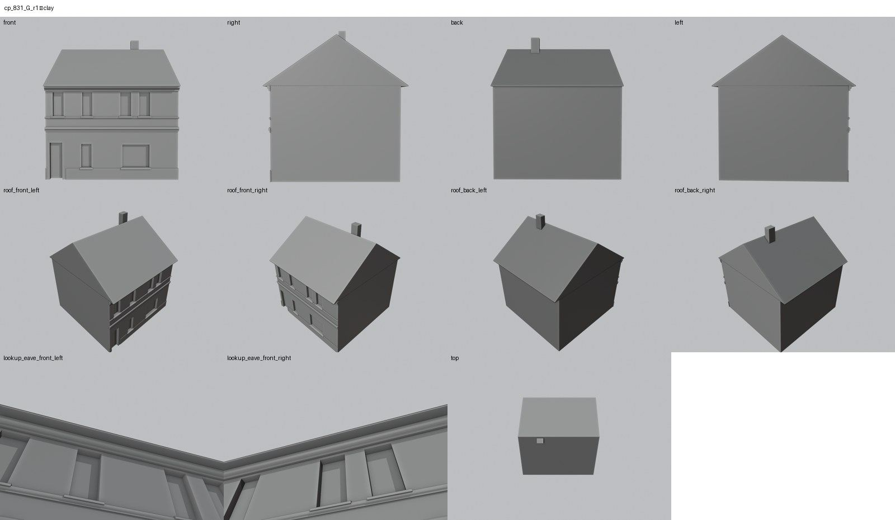

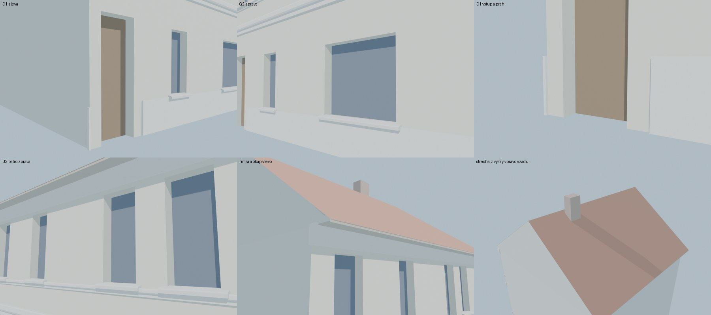
Kontrola modelu
| Brána geometrie (automaticky) | v pořádku |
|---|---|
| Uzavřené podkroví (GLB) | v pořádku: zásahy paprsků 0, nekryté zdivo 0,00 m², střecha nad prázdnem 0,00 m² |
| UV mapování | v pořádku: 0 zkolabovaných ploch z 173 |
| Síť | v pořádku |
| Počty otvorů proti pramenu | souhlasí |
| Vizuální kontrola | prošla (Claude (Opus 5.5), 2026-10-25) |
| Kontrola střechy | prošla |
- all main: polohy z rektifikace cp_831_002 (19,67 m), marks v ramecku sedi na otvorech (souhlasí)
Textury
zatím bez textur
Až Codex dodá texturovaný model, objeví se v prohlížeči nahoře volba Textury (Codex).
Hypotézy
Vše níže je model_hypothesis, provisional, locked: false.
- výška okapu a hřebene je převzata z 823 (společná fasáda, provizorně)
- výkladní okno G2 je stav 60.–70. let (rozbité, rozšířené), původní okna nejsou známa
- dvorní průčelí je bez otvorů; fotografie dvora je jen orientační
- bosáž přízemí patří do textury
Technický zápis hypotéz v plánu modelu (revize r1, bez diakritiky)
- vyska okapu a hrebene jako 823 (spolecna fasada, provisional)
- vykladni okno G2 = stav 60.-70. let (rozbite, rozsirene); puvodni okna neznama
- dvorni pruceli bez otvoru (fotografie dvora cp_831_001 jen orientacne)
- bosaz prizemi = textura
Historie revizí modelu
- r1 25.10.2026: prvni stavba - prava polovina dvojdomu, otvory z rektifikovane fotografie KSPPOP cp_831_002
Soubory
- Geometrie čp. 831, GLB (revize r1)
- Pracovní model: F:\MOST\output\u_hriste_street_claude_2026-10-25\houses\cp831\r1\cp_831_G_r1.blend
- Plán modelu: F:\MOST\output\u_hriste_street_claude_2026-10-25\houses\cp831\geometry_plan.json